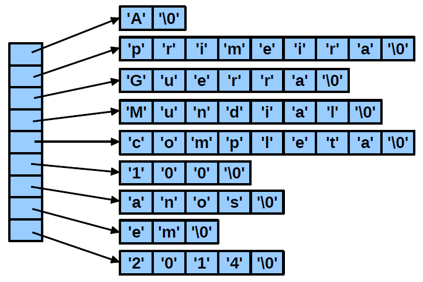
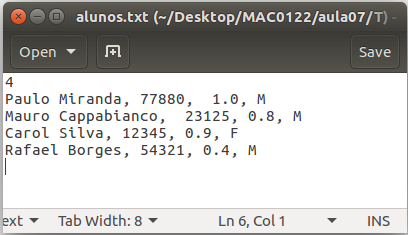
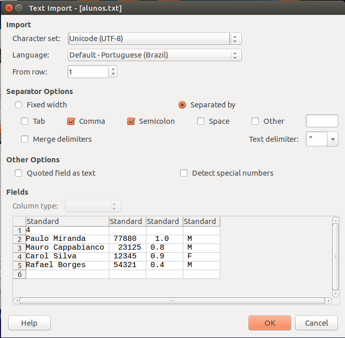
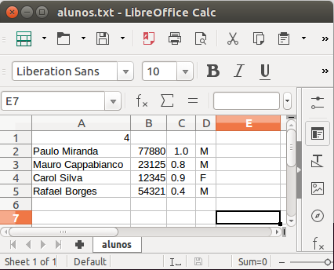

Solução:
1 2 3 4 5 6 7 8 9 10 11 12 13 14 15 16 17 18 19 20 21 22 23 24 25 26 27 28 29 30 31 32 33 34 35 36 37 38 | #include <stdio.h>#define LIM 500#define NLETRAS ('z'-'a'+1)int main(){ char texto[LIM]; int freq[NLETRAS]; int i; char c; /* Lê uma linha de texto */ scanf("%[^\n]", texto); /* Inicializa com 0 o vetor de contadores */ for(i = 0; i < NLETRAS; i++) freq[i] = 0; /* Percorre a string, contando a frequência das letras */ i = 0; while(texto[i] != '\0'){ c = texto[i]; /* Identifica letras minúsculas */ if(c >= 'a' && c <= 'z') freq[c - 'a']++; /* Identifica letras maiúsculas */ else if(c >= 'A' && c <= 'Z') freq[c - 'A']++; i++; } /* Imprime a frequência das letras com contagem não nula */ for(i = 0; i < NLETRAS; i++){ if(freq[i] > 0) printf("letra: %c, freq: %d\n", 'a'+i, freq[i]); } return 0;} |
Solução:
1 2 3 4 5 6 7 8 9 10 11 12 13 14 15 16 17 18 19 20 21 22 23 24 25 26 27 28 29 | #include <stdio.h>#include <string.h>int main(){ char str[] = "e chega de disputar essa rua com a monica, eu poderei comprar ruas, bairros inteiros"; char dest[500]; int i, j, n; char c; j = 0; n = strlen(str); for(i = 0; i < n; i++){ if(str[i] == 'r' && str[i+1] >= 'a' && str[i+1] <= 'z'){ c = 'l'; if(str[i+1] == 'r') i++; } else c = str[i]; dest[j] = c; j++; } dest[j] = '\0'; printf("%s\n", dest); return 0;} |
void InverteString(char str[]);1 2 3 4 5 6 7 8 9 10 11 12 13 14 15 16 17 18 19 20 21 22 23 24 | /* função auxiliar */int TamanhoString(char str[]){ int i = 0; while(str[i] != '\0'){ i++; } return i;}void InverteString(char str[]) { int i,j; char tmp; j = TamanhoString(str) - 1; i = 0; while (i < j) { tmp = str[i]; str[i] = str[j]; str[j] = tmp; i++; j--; }} |
void InvertePalavras(char str[]);1 2 3 4 5 6 7 8 9 10 11 12 13 14 15 16 17 18 19 20 21 22 23 24 25 26 27 28 | /* função auxiliar */void InverteSubString(char str[], int i, int j){ char tmp; while (i < j) { tmp = str[i]; str[i] = str[j]; str[j] = tmp; i++; j--; }}void InvertePalavras(char str[]){ int i, j; i = 0; do { while(str[i] == ' ') i++; j = i; while(str[j] != '\0' && str[j] != ' ') j++; j = j - 1; if(i < j) InverteSubString(str, i, j); i = j + 1; } while (str[i] != '\0');} |
void ReduzEspacos(char dest[], char orig[]);1 2 3 4 5 6 7 8 9 10 11 12 13 14 15 16 17 18 19 | void ReduzEspacos(char dest[], char orig[]){ int i, j; char t; i = 0; j = 0; while(orig[i] != '\0'){ if(orig[i] != ' '){ t = orig[i]; i++; } else { t = orig[i]; while(orig[i] == ' ') i++; } dest[j] = t; j++; } dest[j] = '\0';} |
void ProcuraEmail(char dest[], char orig[]);1 2 3 4 5 6 7 8 9 10 11 12 13 14 15 16 17 18 19 20 21 22 23 24 25 26 27 28 29 30 31 32 33 34 35 36 | /* função auxiliar */void CopiaSubString(char dest[], char orig[], int inic, int fim){ int i,j; j = 0; for(i = inic; i <= fim; i++){ dest[j] = orig[i]; j++; } dest[j] = '\0';}void BuscaEmail(char dest[], char orig[]){ int i,inic,fim; /* Procura índice do caractere '@'*/ i = 0; while(orig[i] != '\0'){ if(orig[i] == '@') break; i++; } /* Nenhum email encontrado */ if(orig[i] == '\0'){ dest[0] = '\0'; return; } inic = fim = i; while(inic > 0){ if(orig[inic-1] == ' ') break; inic--; } while(orig[fim+1] != ' ' && orig[fim+1] != '\0') fim++; CopiaSubString(dest, orig, inic, fim);} |
1 2 3 4 5 6 7 8 9 10 11 12 13 14 15 16 17 18 19 20 21 22 23 24 25 26 | #include <stdio.h>/* Inserir nesse ponto o código das funções anteriores */int main(){ char str1[] = "PAMELA SILVA"; char str2[] = "PAMELA SILVA"; char str3[] = "Enviar mensagem para lucas@ig.com.br ou para outro moderador"; char email[500]; char B[500]; InverteString(str1); printf("%s.\n", str1); InvertePalavras(str2); printf("%s.\n", str2); ReduzEspacos(B, " Problema de Strings "); printf("%s.\n", B); BuscaEmail(email, str3); printf("Email: %s.\n",email); return 0;} |
5 22 33 44 55 88o seu programa deve imprimir:
88 55 44 33 22O programa não deve impor limitações sobre o valor de n.
1 2 3 4 5 6 7 8 9 10 11 12 13 14 15 16 17 18 19 20 21 22 23 24 25 26 27 28 29 30 31 32 | #include <stdio.h>#include <stdlib.h>int main() { int n, i, num; int *vet = NULL; /*Lê o tamanho do vetor.*/ scanf("%d", &n); /*Aloca um vetor com n inteiros (n*4 bytes) na heap. O endereço do vetor alocado fica armazenado no apontador "vet". */ vet = (int *)malloc(n*sizeof(int)); /*Lê "n" números da entrada padrão (teclado), e preenche o vetor alocado. */ for (i = 0; i < n; i++) { scanf("%d", &num); vet[i] = num; } /*Imprime o vetor em ordem invertida.*/ for (i = n-1; i >= 0; i--) printf(" %d ",vet[i]); printf("\n"); /*Libera a memória alocada do vetor.*/ free(vet); return 0;} |
| (a) Exemplo de imagem de entrada, | (b) imagem de saída resultante. |
Uma explicação sobre o formato de imagem PGM pode ser encontrada aqui.
Solução:
1 2 3 4 5 6 7 8 9 10 11 12 13 14 15 16 17 18 19 20 21 22 23 24 25 26 27 28 29 30 31 32 33 34 35 36 37 38 39 40 41 42 43 44 45 46 47 48 49 50 51 52 53 54 55 56 57 58 59 60 61 62 63 64 65 66 67 68 69 | #include <stdio.h>#include <stdlib.h>int main(){ char nome[120]; char tipo[10]; FILE *fp; int **M; int *tmp; int nlinhas, ncolunas, valmax, i, j; printf("Digite o nome do arquivo: "); scanf("%s", nome); /* Abrindo o arquivo em modo de leitura: */ fp = fopen(nome, "r"); if(fp == NULL){ printf("Erro na leitura\n"); return 0; } /* Leitura do cabeçalho do arquivo: */ fscanf(fp, "%s", tipo); fscanf(fp, "%d %d", &ncolunas, &nlinhas); fscanf(fp, "%d", &valmax); /* Alocação de memória da matriz */ M = (int **)malloc(sizeof(int *)*nlinhas); if(M == NULL){ printf("Erro ao alocar a matriz\n"); return 0; } for(i = 0; i < nlinhas; i++) M[i] = (int *)malloc(sizeof(int)*ncolunas); /* Preenchendo a matriz com os dados da imagem: */ for(i = 0; i < nlinhas; i++) for(j = 0; j < ncolunas; j++) fscanf(fp, "%d", &M[i][j]); fclose(fp); /* Processamento da imagem: */ for(i = 0; i < nlinhas/2; i++){ tmp = M[i]; M[i] = M[i+nlinhas/2]; M[i+nlinhas/2] = tmp; } /* Gravação da imagem resultante: */ fp = fopen("saida.pgm", "w"); fprintf(fp, "P2\n"); fprintf(fp, "%d %d\n", ncolunas, nlinhas); fprintf(fp, "%d\n", valmax); for(i = 0; i < nlinhas; i++){ for(j = 0; j < ncolunas; j++) fprintf(fp, "%d ", M[i][j]); fprintf(fp, "\n"); } fclose(fp); /* Liberar memória: */ for(i = 0; i < nlinhas; i++) free(M[i]); free(M); return 0;} |
Use o protótipo abaixo:
char **VetorDePalavras(char texto[], int *npal);
Exemplo:
Para o texto de entrada: "A primeira Guerra Mundial completa 100 anos em 2014",
no final teremos os seguintes vetores alocados:

1 2 3 4 5 6 7 8 9 10 11 12 13 14 15 16 17 18 19 20 21 22 23 24 25 26 27 28 29 30 31 32 33 34 35 36 37 38 39 40 41 42 43 44 45 46 47 48 49 50 51 52 53 54 55 56 57 58 59 60 61 62 63 64 65 66 67 68 69 70 71 72 73 74 75 76 77 78 79 | #include <stdio.h>#include <stdlib.h>char **ListaPalavras(char texto[], int *npalavras){ char **L = NULL; int i,j,tam,npal,inic; char *pal; /* Conta o número de palavras. */ i = 0; npal = 0; while(texto[i] != '\0'){ while(texto[i] == ' ') i++; if(texto[i] != '\0'){ npal++; while(texto[i] != ' ' && texto[i] != '\0') i++; } } *npalavras = npal; /* Aloca o vetor de apontadores. */ L = (char **)malloc(npal*sizeof(char *)); if(L == NULL){ printf("Memoria insuficiente.\n"); exit(1); } i = 0; j = 0; while(texto[i] != '\0'){ while(texto[i] == ' ') i++; inic = i; while(texto[i] != ' ' && texto[i] != '\0') i++; tam = i - inic; if(tam > 0){ pal = (char *)malloc(sizeof(char)*(tam+1)); if(pal == NULL){ printf("Memoria insuficiente.\n"); exit(1); } L[j] = pal; i = inic; while(texto[i] != ' ' && texto[i] != '\0'){ pal[i-inic] = texto[i]; i++; } pal[i-inic] = '\0'; j++; } } return L;}int main(){ char texto[] = "A primeira Guerra Mundial completa 100 anos em 2014"; char **L; int n,i; L = ListaPalavras(texto, &n); printf("Lista de palavras:\n"); for(i = 0; i < n; i++){ printf("%s.\n",L[i]); } /* Libera memória */ for(i = 0; i < n; i++){ free(L[i]); } free(L); return 0;} |
float Distancia(struct Vertice A, struct Vertice B);float sqrtf(float x); para calcular a raiz quadrada.
float Perimetro(struct Triangulo T);
Solução:
1 2 3 4 5 6 7 8 9 10 11 12 13 14 15 16 17 18 19 20 21 22 23 24 25 26 27 28 29 30 31 | #include <stdio.h>#include <stdlib.h>#include <math.h>struct Vertice{ float x; float y;};struct Triangulo{ struct Vertice A; struct Vertice B; struct Vertice C;};float Distancia(struct Vertice A, struct Vertice B){ float dx, dy, d; dx = (B.x - A.x); dy = (B.y - A.y); d = sqrtf(dx*dx + dy*dy); return d;}float Perimetro(struct Triangulo T){ float d = 0.0; d += Distancia(T.A, T.B); d += Distancia(T.A, T.C); d += Distancia(T.B, T.C); return d;} |
5 0.0 0.0 0.0 1.0 1.0 0.0 0.0 0.0 0.0 0.1 0.1 0.0 2.0 2.0 3.0 2.0 2.5 3.0 2.0 2.0 2.1 2.0 2.05 2.1 8.0 1.0 7.0 3.0 2.0 1.0Escreva um programa que:
3 0.00 0.00 0.00 1.00 1.00 0.00 2.00 2.00 3.00 2.00 2.50 3.00 8.00 1.00 7.00 3.00 2.00 1.00
Solução:
1 2 3 4 5 6 7 8 9 10 11 12 13 14 15 16 17 18 19 20 21 22 23 24 25 26 27 28 29 30 31 32 33 34 35 36 37 38 39 40 41 42 43 44 45 46 | #include <stdio.h>#include <stdlib.h>#include <math.h>/* Inserir nesse ponto o código das funções e as definições de estruturas do problema anterior */int main(){ FILE *fp = NULL; struct Triangulo *T = NULL; int n, nn = 0, i; fp = fopen("entrada.txt", "r"); if(fp == NULL){ printf("Erro na leitura do arquivo.\n"); exit(1); } fscanf(fp, "%d", &n); T = (struct Triangulo *)malloc(n*sizeof(struct Triangulo)); if(T == NULL){ printf("Memoria insuficiente.\n"); exit(1); } for(i = 0; i < n; i++){ fscanf(fp, "%f %f", &(T[i].A.x), &(T[i].A.y)); fscanf(fp, "%f %f", &(T[i].B.x), &(T[i].B.y)); fscanf(fp, "%f %f", &(T[i].C.x), &(T[i].C.y)); if( Perimetro(T[i]) > 0.5 ) nn++; } fclose(fp); fp = fopen("saida.txt", "w"); fprintf(fp, "%d\n", nn); for(i = 0; i < n; i++){ if( Perimetro(T[i]) > 0.5 ){ fprintf(fp, "%.2f %.2f ", T[i].A.x, T[i].A.y); fprintf(fp, "%.2f %.2f ", T[i].B.x, T[i].B.y); fprintf(fp, "%.2f %.2f\n", T[i].C.x, T[i].C.y); } } fclose(fp); free(T); return 0;} |

Solução:
1 2 3 4 5 6 7 8 9 10 11 12 13 14 15 16 17 18 19 20 21 22 23 24 25 26 27 28 29 30 31 32 33 34 35 36 37 38 39 40 41 42 43 44 45 46 47 48 | #include <stdio.h>#include <stdlib.h>struct Aluno{ char nome[100]; int n_usp; float cr; char sexo;};void ImprimeAluno(struct Aluno A){ printf("Nome: %s, ", A.nome); printf("NUSP: %d, ", A.n_usp); printf("CR: %.2f, ", A.cr); printf("Sexo: %c\n", A.sexo);}int main(){ char arquivo[100]; FILE *fp; int nalunos, i; struct Aluno *V; printf("Digite o nome do arquivo: "); scanf("%s", arquivo); fp = fopen(arquivo, "r"); fscanf(fp, "%d", &nalunos); V = (struct Aluno *)malloc(sizeof(struct Aluno)*nalunos); for(i = 0; i < nalunos; i++){ fscanf(fp, " %[^,],", V[i].nome); fscanf(fp, "%d,", &V[i].n_usp); fscanf(fp, "%f,", &V[i].cr); fscanf(fp, " %c", &V[i].sexo); } fclose(fp); for(i = 0; i < nalunos; i++) ImprimeAluno(V[i]); fp = fopen("saida.bin", "wb"); fwrite(V, sizeof(struct Aluno), nalunos, fp); fclose(fp); free(V); return 0;} |
|  |  |
1 2 3 4 5 6 7 8 9 10 11 12 13 14 15 16 17 18 19 20 21 22 23 24 25 26 27 28 29 30 31 32 33 34 35 36 37 38 39 40 41 42 43 44 45 46 47 | #include <stdio.h>#include <stdlib.h>struct bloco{ int num; struct bloco *prox;};void ImprimeLista(struct bloco *L){ struct bloco *T = L; while(T != NULL){ printf(" %d ",T->num); T = T->prox; } printf("\n");}void LiberaLista(struct bloco *L){ struct bloco *T,*P; T = L; while(T != NULL){ P = T->prox; free(T); T = P; }}int main(){ struct bloco *L = NULL; struct bloco *N; int i; /* Aloca lista ligada */ for(i = 0; i<= 3; i++){ N = (struct bloco *)malloc(sizeof(struct bloco)); N->num = i; N->prox = L; L = N; } /* Imprime elementos da lista */ ImprimeLista(L); /* Libera a memória utilizada pela lista */ LiberaLista(L); return 0;} |
P(x) = an xn + an-1 xn-1 + ... + a1 x1 + a0 x0
A solução a seguir usa listas circulares com nócabeça, a fim de utilizar a técnica de sentinelas. Consideramos que:
1 2 3 4 5 6 7 | struct Termo{ float coef; int expo; struct Termo *prox;};typedef struct Termo* Polinomio; |
1 2 3 4 5 6 7 | struct Termo *AlocaTermo(){ struct Termo *p; p = (struct Termo*)malloc(sizeof(struct Termo)); if(p == NULL) exit(1); return p;} |
1 2 3 4 5 6 7 8 | Polinomio CriaPolinomioNulo(){ Polinomio p; p = AlocaTermo(); p->coef = 0.0; p->expo = -1; p->prox = p; return p;} |
1 2 3 4 5 6 7 8 9 10 11 12 13 14 15 16 17 18 19 | void InsereTermo(Polinomio p, float coef, int expo){ struct Termo *t, *at,*q; /* Aloca memória para o novo termo: */ q = AlocaTermo(); q->coef = coef; q->expo = expo; /* Busca a posição correta para inserir o novo termo, O novo termo será inserido entre os termos apontados por at e t. */ at = p; t = p->prox; while(expo < t->expo){ at = t; t = t->prox; } q->prox = t; at->prox = q;} |
1 2 3 4 5 6 7 8 9 10 11 12 13 14 | void ImprimePolinomio(Polinomio p){ struct Termo *t; t = p->prox; while(t != p){ printf("%.2f*x^%d",t->coef,t->expo); t = t->prox; if(t != p){ if(t->coef >= 0.0) printf("+"); } } printf("\n");} |
sscanf.
A função sscanf
é similar a função scanf,
porém, ao invés de ler a entrada padrão (teclado),
ela lê os dados diretamente de uma string (vetor), que é
passada como o primeiro parâmetro do método.
O "%n" é usado para monitorar
a quantidade de caracteres lidos a cada execução
do sscanf.
A variável nn é
usada como um contador (acumulador) do total de
caracteres lidos. O valor de nn
é utilizado como
índice na expressão,
permitindo avançar pela string
a cada chamada do sscanf.
Para isso, usamos a aritmética de ponteiros
expr+nn.
1 2 3 4 5 6 7 8 9 10 11 12 13 14 15 16 17 18 19 20 21 22 23 24 25 26 27 28 | Polinomio CriaPolinomio(char expr[]){ Polinomio p; int expo,r,n,nn; float coef,sinal = 1.0; char c; nn = 0; p = CriaPolinomioNulo(); while(1){ r = sscanf(expr+nn," %f * x ^ %d %n",&coef, &expo,&n); if(r == 0 || r == EOF) break; nn += n; InsereTermo(p, sinal*coef, expo); r = sscanf(expr+nn,"%c %n",&c,&n); if(r == EOF || r == 0) break; nn += n; if(c == '-') sinal = -1.0; else sinal = 1.0; } return p;} |
1 2 3 4 5 6 7 8 9 10 11 12 13 14 15 16 17 18 19 20 21 22 23 24 25 26 27 28 29 30 31 32 33 34 | Polinomio SomaPolinomios(Polinomio p, Polinomio q){ Polinomio r; struct Termo *pp, *qq, *rr; float cf; r = CriaPolinomioNulo(); rr = r; pp = p->prox; qq = q->prox; while(pp->expo > -1 || qq->expo > -1){ if(pp->expo < qq->expo){ InsereTermo(rr, qq->coef, qq->expo); rr = rr->prox; qq = qq->prox; } else if(qq->expo < pp->expo){ InsereTermo(rr, pp->coef, pp->expo); rr = rr->prox; pp = pp->prox; } else{ /* pp->expo == qq->expo */ cf = pp->coef + qq->coef; if(cf != 0.0){ InsereTermo(rr, cf, pp->expo); rr = rr->prox; } pp = pp->prox; qq = qq->prox; } } return r;} |
1 2 3 4 5 6 7 8 9 10 11 12 13 14 | int main(){ Polinomio p,q,r; p = CriaPolinomio("5.0*x^3 -4.0*x^1 + 2.0*x^0"); ImprimePolinomio(p); q = CriaPolinomio(" 8.0*x^4 + 2.0*x^3 + 4.0*x^1"); ImprimePolinomio(q); r = SomaPolinomios(p, q); ImprimePolinomio(r); return 0;} |
Solução:
1 2 3 4 5 6 7 8 9 10 11 12 13 14 15 16 17 | struct Reg{ int dado; struct Reg *prox;};struct Reg *InverteLista(struct Reg *L){ struct Reg *T, *A; A = NULL; T = L; while(T != NULL){ L = L->prox; T->prox = A; A = T; T = L; } return A;} |
1 2 3 4 5 6 7 8 9 10 11 12 13 14 15 16 17 | int main(){ struct Reg *L = NULL, *N; int i; /* Criando uma lista para teste: */ for(i = 0; i < 4; i++){ N = (struct Reg *)malloc(sizeof(struct Reg)); N->dado = i; N->prox = L; L = N; } printf("Invertendo a lista: \n"); L = InverteLista(L); return 0;} |